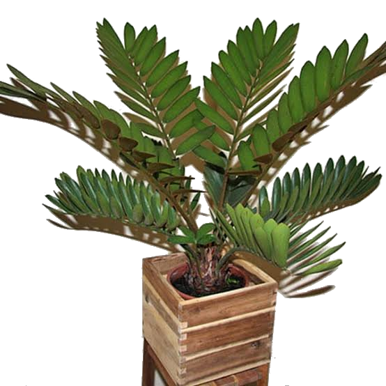
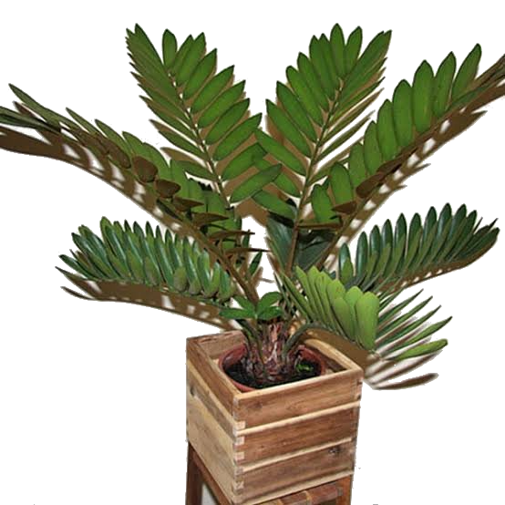

ZAMIA
 

Descripción morfológica
Zamia es un género de plantas gimnospermas que se caracteriza por sus hojas pinnadas y su apariencia similar a las palmas, aunque no están emparentadas con estas.
Presentan un tallo subterráneo o levemente expuesto del cual brotan las hojas. Estas son largas, compuestas y coriáceas. Tienen conos masculinos y femeninos separados en distintas plantas.
Distribución y hábitat
Las especies de Zamia se encuentran principalmente en América, desde el sur de Estados Unidos hasta Sudamérica.
Habitan en zonas tropicales y subtropicales, en suelos bien drenados y en lugares sombreados o con luz filtrada.
Ciclo de vida y reproducción
Son plantas perennes de crecimiento lento. La reproducción se da a través de semillas, las cuales se desarrollan en conos. Presentan sexos separados en diferentes individuos.
Usos principales
Ornamental: Muy apreciada en jardinería tropical por su forma exótica y longevidad.
Ecológico: Algunas especies tienen importancia ecológica en los ecosistemas donde habitan.
Ficha botánica
| Nombre común | Zamia |
|---|---|
| Nombre científico | Zamia spp. |
| Reino | Plantae |
| Filo | Cycadophyta |
| Clase | Cycadopsida |
| Orden | Cycadales |
| Familia | Zamiaceae |
| Género | Zamia |
| Tipo de planta | Arbusto perenne |
| Altura | Hasta 1 metro |
| Reproducción | Sexual (semillas) |
| Usos | Ornamental, ecológico |